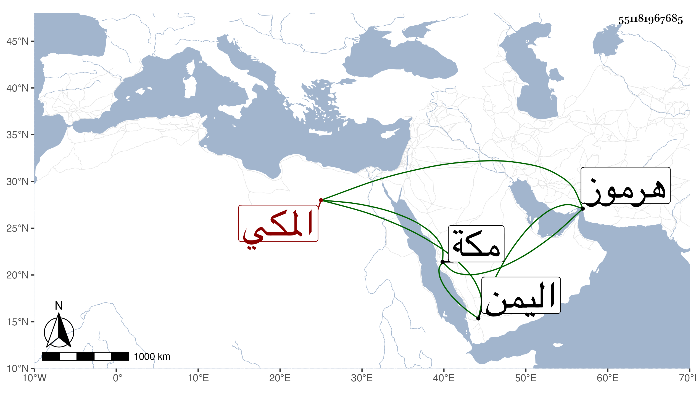

0902Sakhawi.DawLamic.ITO20230111-ara1.EIS1600.551181967685
Biography ID: 551181967685
456
أبو القسم بن محمد بن مقبل بن عبد الله بن عبد الرحمن المكي ويعرف بالغلة الماضي أبوه ممن يتعانى التكسب وعنده تودد وخير بل كان من أصحاب صاحبنا ابن فهد ولد في سنة احدى وثلاثين ظنا بمكة ممن يتعانى التكسب وسافر لهرموز واليمن وغيرهما وتعانى المغاص على اللآلئ متجرا فيه .
